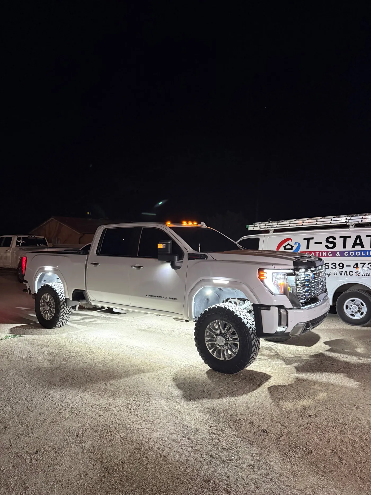

Mesa, AZ · Our Shop
Rock Lights, Wheel Lights And Underglow Installed In Mesa
ITM Customs is a Mesa shop. We make our own rock lights and wheel lights and install them here, along with underglow, switchback and cab lights, on trucks, Jeeps, side-by-sides and cars. It's a short drive from Gilbert, Chandler, Tempe and Queen Creek.
5.0★ from 33 reviews · installed in Mesa · kits ship anywhere
- Drop-Off
- By appointment
- Hours
- Mon to Sat, 9 to 4:30
- Booking
- Free, about a minute

Built For The Dark Roads East Of Mesa
Mesa runs out of streetlights fast once you head east. Bush Highway out to Saguaro Lake, Usery Pass Road and the trailheads along the Salt River are dark, and that's where a lit truck earns its keep. Rock lights show you the ground you're parking on, and wheel-well lights show you what's around the tires.
In town it's a different job. A dark driveway, a gravel lot after a game, a trailer to hook up at night. Pure white rock lights double as work lights for all of it, and they're the color you can leave on while driving.
What We Install At Our Mesa Shop
Each service has its own page with the lights, the prices and the photos.
Dropping Your Truck Off In Mesa
Drop-off is by appointment, Monday to Saturday, 9 to 4:30. Book a day and a time online, and we text you to confirm the slot and your install quote. The shop address comes with that confirmation.
Bring your lights if you have them. Pick Bringing My Own when you book and tell us what you have, or buy a kit from us and we'll install it in the same visit.
What Lights And Installs Cost
Lights are priced on our site. Install labor depends on your vehicle and how many lights you want, so we quote it when we confirm your booking, before any work starts.
| What | Price | Details |
|---|---|---|
| Pure white rock lights | $45 to $55 | Pack of 4, 72 or 84-chip |
| 219-chip rock light kit | $240 to $920 | 4 to 24 lights |
| Switchback kit | $200 to $700 | 4 to 20 lights, white and amber |
| RGBW color kit | $205 to $705 | 4 to 20 lights |
| Wheel lights | $380 or $500 | 5-row or 10-row, all four wheels |
| Install labor | Quoted first | Agreed before we start |
Driving Lit In Mesa And Arizona
Arizona's rules apply in Mesa the same as everywhere in the state. White is fine on the road. Red or blue light visible from the front isn't allowed on a highway, and flashing modes are for when you're parked. The full plain-English summary of A.R.S. 28-947 is on our underglow page.
Wired Right On Every Install
Every light we put on a vehicle gets the same four things. None of them are extras, and none of them depend on who's working that day.
- Fused, every circuit
- Each circuit gets its own fuse, so a short pops a fuse instead of cooking the wiring or the light.
- Heat-sealed connections
- Every splice is sealed against Arizona heat, monsoon water and the pressure washer.
- Your lights or ours
- Bring a kit you bought from us or one you bought somewhere else, or we supply the lights.
- Tested before you leave
- We turn on every light with you at pickup, so you see it working before you drive away.
How An Install Works At Our Mesa Shop
- Book a drop-offPick the work, your vehicle and a drop-off day and time. Booking is free and takes about a minute.
- We text you to confirmYou get the slot and your install quote by text before anything is done. Labor depends on your vehicle and how many lights you want.
- Drop it off in MesaDrop-off is by appointment, Monday to Saturday, 9 to 4:30. The address comes with your confirmation.
- Pick it up litWe walk you through every light and the controls, then you drive home with it.
Builds From Our Customers


Mesa Questions
Where is the shop?
In Mesa. Drop-off is by appointment, and the address comes with your booking confirmation.
What are your hours?
Drop-off is Monday to Saturday, 9 to 4:30, by appointment.
Do you install lights I bought somewhere else?
Yes. Pick Bringing My Own in the booking form and tell us what you have.
Can I just buy a kit and do it myself?
Yes. Every kit ships, and the switchback, RGBW and wheel light kits are plug and play with a module, remote and app.
Do you work on side-by-sides and Jeeps?
Yes. Anything with a frame to mount to can run our lights.
How much does an install cost?
Lights start at $45 for a pack of four. Install labor depends on your vehicle and the number of lights, and we quote it before any work starts.